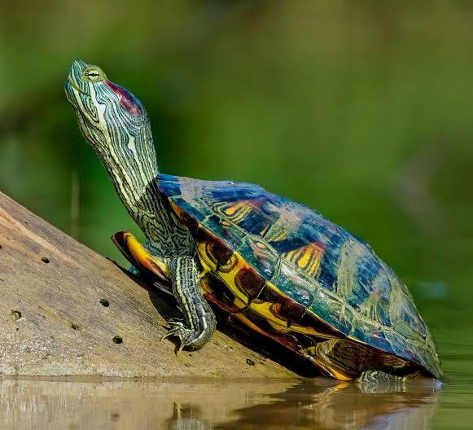
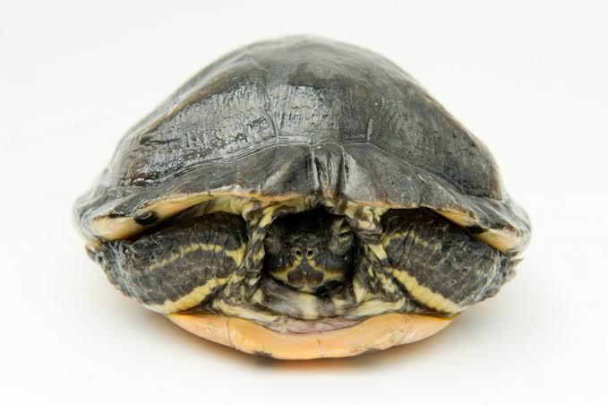
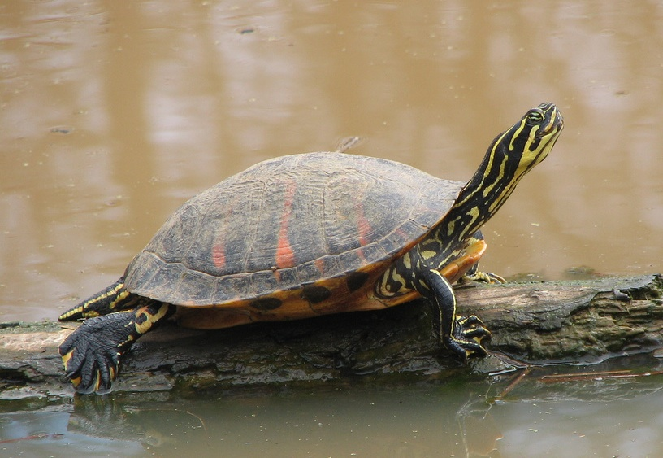
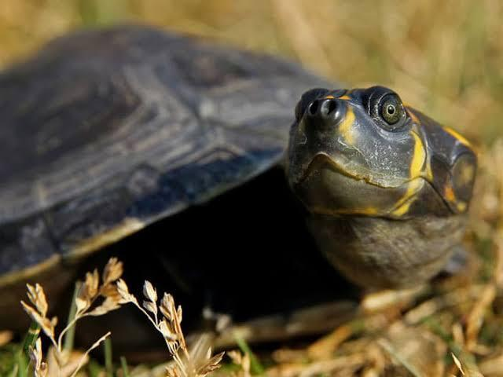
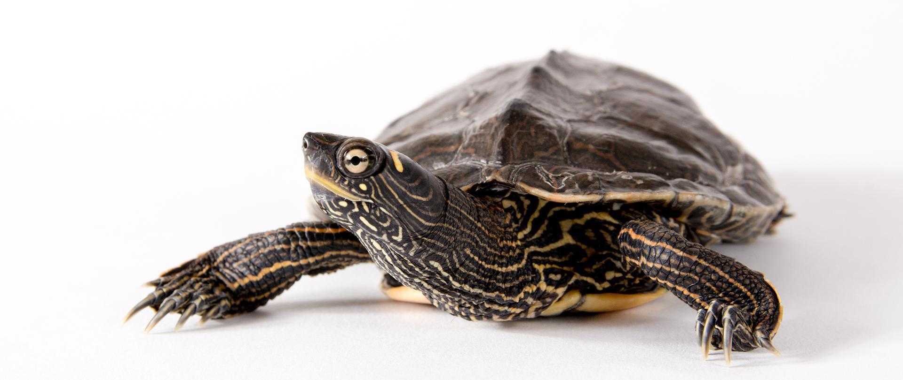
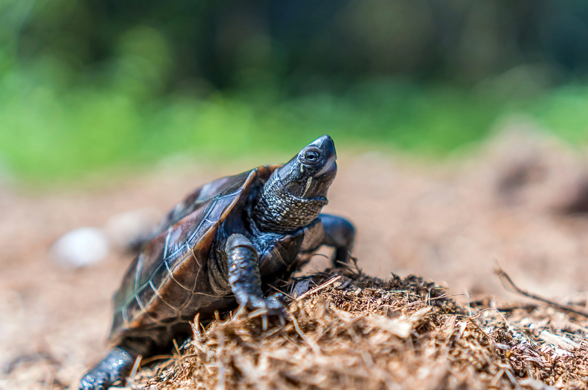
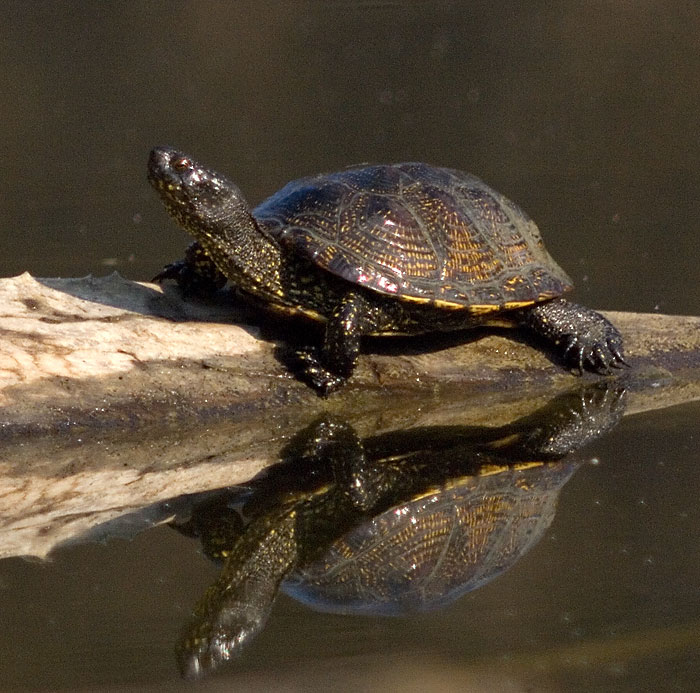
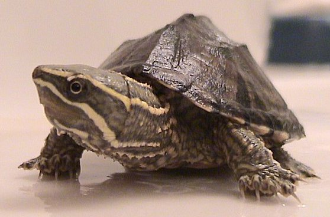

Gatunki
Istnieje wiele gatunków żółwi wodnych, a każdy z nich ma swoje unikalne cechy
i wymagania dotyczące środowiska oraz pielęgnacji. Poniżej znajduje się lista kilku
popularnych gatunków żółwi wodnych, które są często spotykane zarówno w hodowlach domowych,
jak i na wolności:

- Żółw czerwonolicy (Trachemys scripta elegans)
- Opis: Najbardziej znany i popularny gatunek żółwia wodnego trzymany
w domowych akwariach. Ma charakterystyczne czerwone paski po bokach głowy.
- Środowisko: Potrzebuje ciepłej wody oraz wyspy do wygrzewania. Jest bardzo aktywny i wymaga dużego zbiornika.
- Pochodzenie: Pochodzi z Ameryki Północnej.

- Żółw żółtolicy (Trachemys scripta scripta)
- Opis: Podobny do żółwia czerwonolicego, ale zamiast czerwonych pasków ma żółte oznaczenia na głowie.
- Środowisko: Ma podobne wymagania jak żółw czerwonolicy, z dużą ilością przestrzeni do pływania i odpowiednim miejscem do wygrzewania się.
- Pochodzenie: Pochodzi z południowo-wschodnich Stanów Zjednoczonych.

- Żółw kasztanowaty (Pseudemys nelsoni)
- Opis: Charakteryzuje się ciemnozielonymi wzorami na skorupie oraz czerwonymi i pomarańczowymi oznaczeniami na ciele.
- Środowisko: Wymaga dużych zbiorników wodnych z czystą wodą i dobrą filtracją, jak również przestrzeni do wygrzewania się.
- Pochodzenie: Występuje w południowo-wschodnich rejonach Stanów Zjednoczonych, szczególnie na Florydzie.

- Żółw żółtobrzuchy (Podocnemis unifilis)
- Opis: Znany ze swojego żółtego lub pomarańczowego brzucha oraz ciemnych plam na głowie i kończynach.
- Środowisko: Preferuje duże zbiorniki wodne z tropikalnym klimatem i miejscami do wygrzewania się.
- Pochodzenie: Występuje w Ameryce Południowej, w dorzeczu Amazonki.

- Żółw ostrogrzbiety (Graptemys geographica)
- Opis: Znany także jako żółw mapowy, ma charakterystyczne wzory na skorupie przypominające mapę.
- Środowisko: Potrzebuje czystej wody o umiarkowanym przepływie oraz wielu miejsc do wygrzewania się.
- Pochodzenie: Występuje w rzekach i jeziorach Ameryki Północnej.

- Żółw Reevesa (Mauremys reevesii)
- Opis: Ma niewielką, ciemnobrązową lub czarną skorupę i jest znacznie mniejszy od innych popularnych żółwi wodnych.
- Środowisko: Preferuje płytkie zbiorniki z łagodnym prądem wody oraz dużą ilością roślin wodnych.
- Pochodzenie: Pochodzi z Azji, szczególnie z Chin i Japonii.

- Żółw błotny (Emys orbicularis)
- Opis: To jedyny gatunek żółwia wodnego naturalnie występujący w Polsce i Europie Środkowej. Ma ciemną skorupę z żółtymi plamkami.
- Środowisko: Żyje w płytkich zbiornikach wodnych, takich jak stawy, bagna i powolne rzeki.
- Pochodzenie: Występuje na terenie Europy, Azji i części Afryki Północnej.

- Żółw piżmowy (Sternotherus odoratus)
- Opis: Niewielki żółw o ciemnej skorupie, który wytwarza specyficzny zapach jako mechanizm obronny, stąd jego nazwa.
- Środowisko: Preferuje zbiorniki z miękkim dnem i dużą ilością schronień oraz wolno płynącą wodą.
- ochodzenie: Występuje głównie w Ameryce Północnej.
|